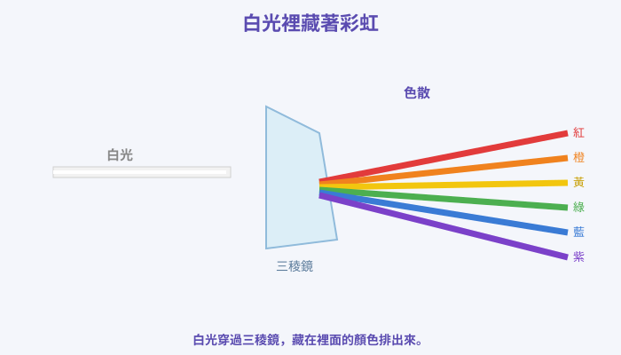
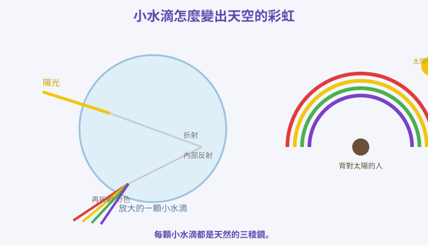
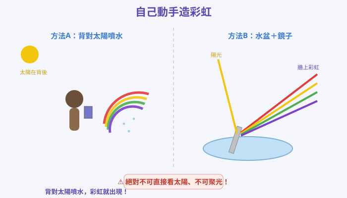
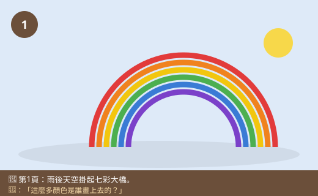
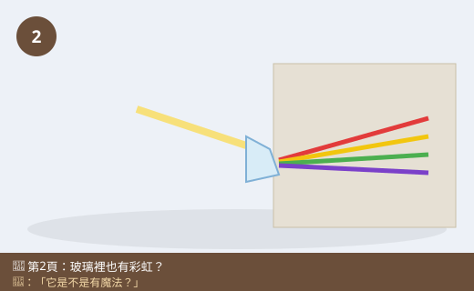
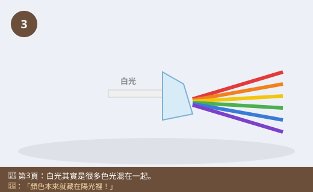
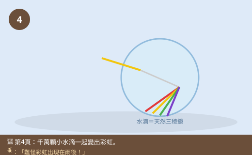
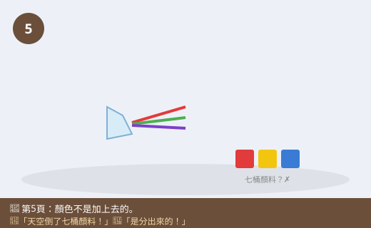
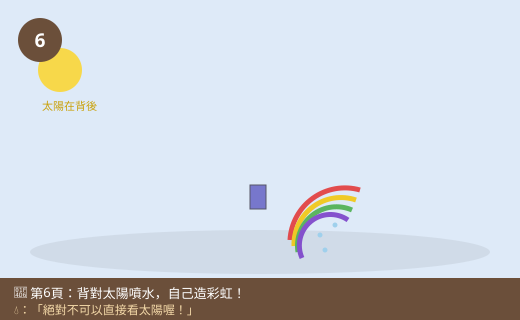

圖一（概念圖）：白光裡藏著彩虹

- 圖像目的
- 呈現白光通過三稜鏡被分成七彩，說明白光是複色光。
- 圖中應出現的元素
- 一束白光→三稜鏡→分出紅橙黃綠藍紫色帶；標「白光」「色散」。
- 必須標示的科學概念
- 白光由多種色光組成；三稜鏡使光色散。
- 圖說
- 「白光穿過三稜鏡，藏在裡面的顏色排出來。」
- AI 繪圖提示詞
- 溫暖手繪繪本風，一束白光進入三角形三稜鏡，另一側射出紅橙黃綠藍紫色帶。繁體中文標籤，白底。
- 避免畫錯的提醒
- 顏色順序紅→紫；色帶從稜鏡「射出端」散開，不是進入端。
💡 雨後天空掛起七彩的橋，好美！但你知道嗎？那七種顏色，其實一直藏在「白白的陽光」裡面。是誰把它們變出來的呢？
| 適合年級 | 國小四年級 |
|---|---|
| 可銜接年級 | 四年級 → 五年級（光的折射與透鏡）→ 國中光的折射與色散 |
| 主題分類 | 聲音、光與電 |
| 核心概念 | 白光由多種色光組成；水滴或三稜鏡讓光色散形成彩虹 |
| 關鍵詞 | 彩虹、色散、白光、三稜鏡、水滴、七彩 |
| 可銜接的國中概念 | 光的折射、色散、可見光光譜 |
| 建議閱讀時間 | 約 15 分鐘 |
| 適合搭配的課堂活動 | 三稜鏡分光、噴水造彩虹、水盆＋鏡子造彩虹 |
午後一場西北雨嘩啦嘩啦下完，太陽又露臉了。小狐同學走到陽台，忽然「哇——」地大叫：「彩虹！好大的彩虹！」天空掛著一道七彩的大橋，從紅、橙、黃、綠、藍，一直到紫，一條一條排得整整齊齊。他看得入迷，卻也滿肚子疑問：「這麼漂亮的顏色，是誰畫上去的呀？是天空在下雨的時候偷偷把顏料倒出來了嗎？」
他跑去問黑熊老師。黑熊老師沒有直接回答，反而拿出一塊三角形的透明玻璃（三稜鏡），走到窗邊有陽光的地方，把它舉起來轉一轉。小狐同學again「哇」了一聲——牆上竟然出現了一小段彩虹！「老師！你的玻璃裡也有彩虹！它是不是有魔法？」
黑熊老師笑著說：「不是魔法喔。我問你，你覺得太陽光是什麼顏色的？」小狐同學想都沒想：「白白的呀，沒有顏色！」黑熊老師搖搖頭：「這就是祕密所在了。看起來『白白的』太陽光，其實裡面偷偷藏著紅、橙、黃、綠、藍、紫好多種顏色的光，只是平常它們混在一起，我們看不出來。」
小狐同學瞪大眼睛：「藏在裡面？那怎麼把它們變出來？」黑熊老師舉起三稜鏡：「只要用對方法——像這塊三稜鏡，或是空中的小水滴——把光『轉個彎、分開來』，藏在裡面的顏色就會一個一個排出來，變成我們看到的彩虹！這個把光分成好多顏色的現象，科學家叫它『色散』。走，我們一起來把陽光裡的彩虹變出來！」
黑熊老師，太陽光明明是白白的，怎麼可能裡面有那麼多顏色？
這正是最神奇的地方！我們看到的白光，其實是紅、橙、黃、綠、藍、紫等許多色光混合在一起的結果。就像很多顏色的光疊在一起，反而看起來是白的。只要把它們分開，就看得到一種一種的顏色了。
那你的三稜鏡是怎麼把它們分開的？
光從空氣進到玻璃、又從玻璃回到空氣時，前進的方向會轉一個彎（這叫折射）。重點是——不同顏色的光，轉彎的角度不太一樣：紫光轉得最多、紅光轉得最少。所以它們就被「分家」了，一個一個排開，變成彩虹。這個現象就叫色散。
補一個冷知識！天上的彩虹，是空中的小水滴當了「天然的三稜鏡」。每一顆小水滴都把陽光折射、分色，千千萬萬顆水滴一起合作，就在天空排出一道大彩虹。所以彩虹常常出現在雨後、或瀑布、噴水池旁邊——因為那裡有很多小水滴！
難怪！那為什麼彩虹的顏色順序都一樣，紅色都在最外面？
因為每種顏色轉彎的角度是固定的，所以排出來的順序也固定：紅、橙、黃、綠、藍、紫，紅色在最外圈、紫色在最內圈。大自然很有規律吧！
我們等一下自己造彩虹！可以用三稜鏡對著陽光，或背對太陽用噴霧瓶噴水。最重要的安全提醒：絕對不可以用眼睛直接看太陽，也不要用放大鏡或鏡子把陽光聚在一起對著人或眼睛，會受傷、甚至引起火災喔！
哼，我知道！彩虹一定是天空把七桶顏料倒下來畫的，要不然怎麼會這麼多顏色？顏色本來就是「加上去」的啦！
迷思怪獸，剛好相反喔！顏色不是「加上去」的，而是「本來就藏在陽光裡」被分出來的。陽光裡本來就有這些色光，水滴和三稜鏡只是把它們分開而已，沒有加任何顏料。你看，同一道陽光，通過三稜鏡就出現彩虹，把三稜鏡拿走，牆上又變回白白的光——顏料要是真的倒下去，怎麼可能收得回來？
原來白光裡藏著整座彩虹！我要來親手把它變出來。
看起來白白的太陽光，其實是很多顏色的光混在一起的（紅、橙、黃、綠、藍、紫）。當光通過三稜鏡或空中的小水滴時，會轉彎（折射），而且每種顏色轉彎的角度不一樣，就被分開排成一條一條的顏色，這就是色散，也就是我們看到的彩虹。所以顏色不是被「加上去」的，是本來就藏在陽光裡、被分出來的。彩虹常出現在雨後，因為空中有很多小水滴。千萬不可以直接看太陽。
白光（陽光）是由不同顏色（不同波長）的色光組成的複色光。光由一種介質進入另一種介質（如空氣→玻璃／水）時會發生折射而改變行進方向；由於不同色光在同一介質中偏折的程度不同（紫光偏折最大、紅光最小），通過三稜鏡後便被分散成連續的色帶，稱為色散。天空的彩虹是陽光進入無數球形小水滴後，經折射→內部反射→再折射而分色，並以固定角度射出，故顏色順序固定為紅橙黃綠藍紫（紅在外、紫在內）。這說明白光可被分解，也可再合成回白光——顏色並非外加，而是本就存在。
可見光是電磁波的一部分，不同顏色對應不同波長（紅長紫短）。折射率隨波長而變（色散關係），使白光通過稜鏡時分解成連續光譜。虹（primary rainbow）由陽光在水滴內經一次內部反射形成，觀察者見到約 42° 的彩色弧、紅外紫內；霓（secondary rainbow）為二次內部反射、顏色順序相反且較暗。此現象印證白光的合成性與折射的波長相依性。國中理化「光的折射」「透鏡」「光譜」會延伸量化折射與色散，並連結到光的波動性質與光譜分析的應用。









| 適合年級 | 四年級 |
|---|---|
| 材料 | 晴天的陽光、噴霧瓶（裝水）、三稜鏡或裝滿水的透明杯、淺水盆、小鏡子、白紙或白牆 |
造彩虹的方法（噴水／水盆鏡子／三稜鏡）或噴水的角度。
有沒有出現彩虹、顏色清不清楚。
同一個晴天、一樣的陽光、都背對太陽觀察。
| 方法 | 有無出現彩虹 | 看到的顏色順序 |
|---|---|---|
| A 噴水 | ||
| B 水盆＋鏡子 | ||
| C 三稜鏡 |
三種方法都能看到紅、橙、黃、綠、藍、紫的彩虹，而且顏色順序都一樣。這是因為水滴、水面或三稜鏡讓白光折射、分色（色散），把本來就藏在陽光裡的各種色光分開來。噴水法要背對太陽才看得到，因為彩虹是陽光被你前方的小水滴分色後再送回你眼睛的。這證明：白光是由多種色光組成的，顏色不是被加上去，而是被分出來的。
⚠️ 安全提醒：絕對不可以用眼睛直接看太陽，會嚴重傷害眼睛！不可以用放大鏡、鏡子把陽光聚成一點對著人、眼睛或紙張，會灼傷或引起火災。玻璃三稜鏡、鏡子要輕拿，小心別摔破割傷。實驗地面若有水要擦乾，避免滑倒。最好在老師或家長陪同下進行。
👾 迷思說法：彩虹的顏色是天空另外「加上去」或倒顏料畫的。
為什麼容易誤解：覺得白光沒有顏色，顏色一定是外來的。
✅ 正確說法：顏色本來就藏在白色的陽光裡。水滴或三稜鏡只是把混在一起的各種色光分開，沒有加任何顏料。把三稜鏡拿走，光又變回白的。
可以怎麼驗證：同一束陽光通過三稜鏡出現彩虹、拿走後又是白光，沒有多出或少掉顏料。
👾 迷思說法：太陽光是白色的，裡面沒有其他顏色。
為什麼容易誤解：陽光看起來就是白白亮亮的。
✅ 正確說法：白光其實是紅橙黃綠藍紫等許多色光混合而成。很多色光疊在一起，看起來才是白的。分開後就看得到一種一種顏色。
可以怎麼驗證：用三稜鏡分光，就能看到白光被分成一整條色帶。
👾 迷思說法：只要有太陽就會有彩虹。
為什麼容易誤解：覺得彩虹是太陽造成的，有太陽就該有。
✅ 正確說法：還需要空氣中有很多小水滴（像雨後、噴水處），而且要背對太陽、太陽角度適當，才看得到彩虹。光有太陽、沒有水滴是不會出現的。
可以怎麼驗證：晴朗無水氣時看不到彩虹；用噴霧瓶製造水滴就能造出來。
👾 迷思說法：彩虹的顏色順序每次都不一樣，是隨機的。
為什麼容易誤解：覺得自然現象很隨興。
✅ 正確說法：因為每種色光折射（轉彎）的角度是固定的，所以彩虹的顏色順序總是紅、橙、黃、綠、藍、紫，紅在外、紫在內，不會亂掉。
可以怎麼驗證：多觀察幾次彩虹或用三稜鏡分光，順序都一樣。
👾 迷思說法：可以走到彩虹的下面、摸到彩虹。
為什麼容易誤解：彩虹看起來就像一座橋落在遠方地面。
✅ 正確說法：彩虹不是一個固定在某處的東西，而是陽光被水滴分色後進到「你眼睛」形成的影像。你走動時，彩虹也會跟著移動，所以永遠走不到、摸不到它。
可以怎麼驗證：朝彩虹走去，會發現它一直後退，無法靠近。
1. 我們看到「白白的」太陽光，其實是？
(A) 完全沒有顏色 (B) 只有白色一種光 (C) 很多顏色的光混在一起 (D) 只有紅光
答案：C。白光由多種色光混合而成。
2. 三稜鏡能把白光分成彩虹，主要是因為光的什麼現象？
(A) 反射 (B) 折射造成的色散 (C) 蒸發 (D) 燃燒
答案：B。不同色光折射角度不同而分開，稱色散。
3. 天空的彩虹是什麼把陽光分色造成的？
(A) 雲 (B) 空中的小水滴 (C) 太陽黑子 (D) 風
答案：B。小水滴像天然三稜鏡，折射分色。
4. 用噴霧瓶造彩虹時，人應該怎麼站？
(A) 面對太陽 (B) 背對太陽 (C) 閉上眼睛 (D) 直接看太陽
答案：B。背對太陽、面向水霧才看得到；絕不可直視太陽。
5. 關於彩虹的顏色順序，下列何者正確？
(A) 每次都不一樣 (B) 固定為紅橙黃綠藍紫 (C) 只有三種顏色 (D) 紫色在最外面
答案：B。順序固定，紅在外、紫在內。
1. 為什麼說「彩虹的顏色不是加上去的」？請用白光的性質說明。
因為白色的陽光本來就是由紅橙黃綠藍紫等多種色光混合而成，這些顏色一直藏在陽光裡。水滴或三稜鏡只是把它們折射、分開，並沒有加任何顏料，所以顏色是「分出來」的，不是「加上去」的。
2. 為什麼彩虹常常出現在雨後、瀑布或噴水池旁邊？
因為這些地方的空氣中有很多小水滴。小水滴會像三稜鏡一樣把陽光折射、分色，很多小水滴一起作用就形成彩虹。沒有水滴就不會有彩虹。
3. 造彩虹的實驗中，有哪些關於「太陽」和「聚光」的安全要注意？
絕對不可以用眼睛直接看太陽，會傷害眼睛；也不可以用放大鏡或鏡子把陽光聚成一點對著人、眼睛或紙，會灼傷或引起火災。玻璃器材要小心別摔破。
1. 小狐在同一個晴天，早上和傍晚都想造彩虹。你覺得他噴水的方向（該朝哪邊、背對哪邊）會不會不一樣？為什麼？
會不一樣。因為要「背對太陽」才看得到彩虹，而太陽早上在東邊、傍晚在西邊，位置不同，所以他背對的方向、噴水的方向也要跟著調整（早上背對東方、傍晚背對西方）。這說明彩虹的出現和太陽的位置、觀察者的方向有關。
2. 有同學說「把彩虹的七種顏色的光通通再合起來，應該會變成很髒的黑色」。你同意嗎？你會怎麼驗證白光是被分開、還是被加上顏色的？
不同意。因為這些顏色本來就是從白光分出來的，把它們再合起來應該會變回「白光」，不是黑色。可以用第二個三稜鏡把分開的色光再折射合併，或用旋轉的彩色盤（把七色一起快速旋轉）觀察，會發現看起來接近白色，證明白光是多種色光合成的，顏色是被「分開」而非「加上去」。
| 向度 | 待加強（1） | 通過（2） | 優秀（3） |
|---|---|---|---|
| 概念理解 | 認為彩虹是外加顏料 | 知道白光被分色成彩虹 | 能以折射色散、水滴作用完整說明 |
| 探究技能 | 無法完成觀察 | 能安全造彩虹並記錄順序 | 能設計驗證白光合成的方法 |
| 安全態度 | 忽視用眼與聚光安全 | 遵守不直視太陽、不聚光 | 主動提醒他人陽光安全 |
| 檢核項目 | 結果 | 備註 |
|---|---|---|
| 科學概念是否正確 | ✅ | 白光複色、折射色散、水滴成虹、順序紅外紫內敘述正確。 |
| 是否符合年級理解程度 | ✅ | 四年級以雨後彩虹、三稜鏡現象切入，定性說明。 |
| 是否有錯誤或過度簡化的比喻 | ✅ | 「藏在陽光裡」「天然三稜鏡」比喻恰當。 |
| 是否清楚區分觀察、推論與解釋 | ✅ | 由三稜鏡與造彩虹觀察，推論白光可分色。 |
| 圖像提示詞是否可能造成誤解 | ✅ | 已提醒順序、背對太陽、不可直視太陽。 |
| 實驗是否安全 | ✅ | 強調不直視太陽、不聚光、玻璃小心，安全低成本。 |
| 是否需要補充資料來源 | ✅ | 對應 INe-Ⅲ-7、INe-Ⅱ-6；色散量化屬國中，見教師補充。 |
| 是否適合轉成 HTML 網頁 | ✅ | 結構完整，含互動測驗與摺疊區。 |